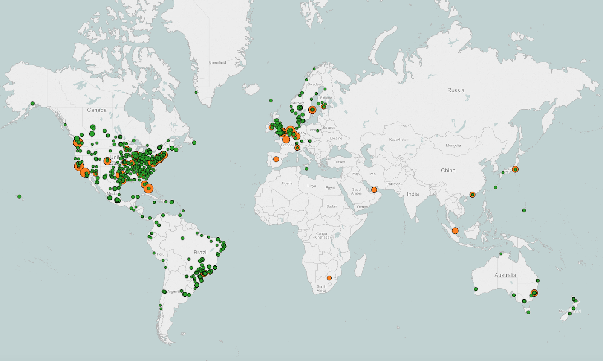

Netflix creativity
Contents
Netflix creativity¶
System Architecture for Personalization and Recommendation¶
Online Computation¶
subject to SLA with maximum latency to respond recommendation
fallback mechanism of precomputed result is adopted in case of failures
computational expensive
Offline computation¶
less limitation on latency, providing more choices to complex algorithms
aggregate stats periodically
new algorithms testing
allows focus on experiments than optimization
Nearline computation¶
intermediate compromise between two modes
allows system to be more responsive
sandbox for applying incremental learning algorithms

ways to combine these 3 approaches¶
fallback
partial precomputation in offline mode allowing less costly operation in online mode
modeling can be done in hybrid offline/online manner
use case of Matrix Factorization calculation
can be done in hybrid online/offline way
some factors can be precomputed offline while others updated in real-time
use case of unsupervised clustering
offline computation of cluster centers
online assignment of clusters
Offline Jobs¶

scheduled periodic jobs
two primary types
model training
collect data
apply ML algo
online learning techniques also possible
batch computation of intermediate or final results
these queries run over large amounts of data
run on Hadoop via Hive or Pig jobs
once completed, publish results and notify subscribers
support different repo as HDFS, S3, Cassandra
handle errors, allow monitoring
this is supported using internal tool called Hermes
this covers use cases similar to Apache Kafka, but is not a message/event queue system
Signals and Models¶

In all modes either online or offline computation, three type of inputs are required - models, data, and signals
Models - small parameter files that have been previously trained offline
Data - is previously processed information stored in database, such as movie metadata or popularity
Signals - refer to information inputed to algorithm obtained from live services and other user-related information such as watch history, or context data such as session, device, date, or time
Event and Data Distribution¶

goal: translate interaction data into insights
source:
user interface such as smart TVs, tablets, game consoles
user events such as click, browses, viewing history
events: time sensitive information
data: dense information where latency is not concern
near-real-time event flow is managed through an internal framework called Manhattan, similar to Twitter Storm
data flow is managed through logging through Chukwa to Hadoop
Hermes is used for publish-subscribe mechanism
Recommendation results¶

goal: personalized recommendations
mostly offline algorithms are applied
freshness applied using online algorithms real-time signals
offline and intermediate results stored in Cassandra, EVCache, and MySQL
MySQL allows storage of structured relational data
not scalable in distributed environments
Cassandra and EVCache both provide key-value stores
Cassandra is a standard solution for distributed and scalable no-SQL store
Cassandra works well generally
however for intensive and constant write operations, EVCache gives better performance
optimal solution is required to handle conflicting goals of query complexity, read/write latency, and transactional consistency
Rapid Event Notification System (RENO)¶
To maintain real time experience, RENO facilitates server initiated communication in scalable and extensible manner
the system works asynchronously that supports both online and offline computation
seemless experience across platforms and devices
requires more than traditional request-response model
Use cases
viewing activity,
personalized experience refresh
membership plan changes
profile changes
Design decisions
Single Events Source
listen for events from different microservices
real time event flow is managed by Manhattan project
Manhattan project - event management framework
Event prioritization
wide ranging use cases
segmented event processing
different events and traffic will have different priority
Hybrid Communication Model
key challenge is to support multiple platforms
a pull model would result in chatty applications
a push model would result in missing notifications
hybrid is the best solution
Targeted Delivery
device specific notification delivery
limits outgoing traffic footprint
Managing High RPS
at peak times, serves 150k events/second
thundering herd problem
large number of processes/threads waiting for an event are awoken, but only one process is able to handle the event
results in system freeze
few optimizations
event age filter
notifications to online devices only, using Zuul
to keep thresholds under threshold, aggressive cluster scale-up configurations
merge duplicate events
RENO service is broken into following components:
Event triggers
Event Management Engine
Event Priority Based Queue
Event Priority Based Clusters
Outbound Messaging System
Persistent Store (Cassandra)
RENO is the centralized rapid notification service for all Netflix products
Netflix Recommendations¶
Netflix Prize - 2006 - improve accuracy by 10%, earlier was Cinematch
beat existing Netflix RMSE of 0.9525 to 0.8572 or less
Korbell team - Progress Prize 8.43% improvement - 107 algorithms - 2000 hours of work
2 algorithms with best performance
Matrix Factorization or the Singular Value Decomposition SVD
Restricted Boltzmann Machines (RBM)
SVD resulted in RMSE of 0.8914
RBM resulted in RMSE of 0.8990
a linear blend reduced the error to 0.88
75% of people follow recommendations
Type of personalization
Diversity - suited as per family member
Awareness - adapt to the change in taste
Explanations - friends watch history, explicit taste preferences and ratings
Genre collections, subsets within genre, ranking of those titles
Freshness - Most popular, Top rated
Similarity - More like ‘XYZ’
Ranking
Goal: rank attractive items
Learning to rank
application of ML (supervised, semisupervised, RL), to construct ranking models for information retrieval systems
supervised classification methods are used for ranking
Logistic Regression,
Support Vector Machines,
Neural Networks, or
Decision Tree-based methods
Gradient Boosted Decision Trees (GBDT)
RankSVM or RankBoost.
commonly used ml algorithms
Linear regression
Logistic regression
Elastic nets
Singular Value Decomposition
Restricted Boltzmann Machines
Markov Chains
Latent Dirichlet Allocation
Association Rules
Gradient Boosted Decision Trees
Random Forests
Clustering techniques from the simple k-means to novel graphical approaches such as Affinity Propagation
Matrix factorization
A/B testing (bucket testing)
how to integrate our machine learning approaches into this data-driven A/B test culture
an offline-online testing process
offline testing cycle is a step where we test and optimize our algorithms prior to performing online A/B testing
to measure model performance in offline mode using
track ranking measures such as
normalized discounted cumulative gain,
mean reciprocal rank, or
fraction of concordant pairs,
track classification metrics such as
accuracy,
precision,
recall, or
F-score
measure famous RMSE from the Netflix Prize
or other more exotic metrics
track how well these metrics correlate to measurable online gains in our A/B tests
since mapping is not perfect, offline performance is used only as an indication to make informed decisions on follow up tests
after validating offline testing hypothesis, launch A/B test


Personalization algorithms¶
Different household members will have different tastes
Optimize both accuracy and diversity
Adapt to the taste, which encourages trust in the system
connected with Facebook which gives personalization algorithm generate recommendations based on social circle
genre personalization
choice of genre
subset of titles within that genre
ranking among those titles
freshness and diversity
Similarity is another personalization
most popular,
top rated,
based on your taste preferences
similar titles
more like “title watched”
Caching at Netflix¶
https://www.slideshare.net/ShashiShekarMadappa/evcache-at-netflix
highly scalable memcache-based caching solution called as EVCache(Ephemeral Volatile Cache)
a memcached & spymemcached based caching solution
Why caching?
fast: faster response time
use case: HomePage - algorithm needs to know Users Taste, Movie Viewing History, Queue, Rating, etc
shared: allows session based app to be stateless without sessions in cloud
scalable: allows NoSQL based persistence like Cassandra/SimpleDB/S3
Overview
distributed Key-Value store - spread across multiple instances
AWS Zone-Aware and data can be replicated across zones.
registers and works with Netflix’s internal Naming Service for automatic discovery of new nodes/services.
stores the data in key-value format
Key has to be a non-null String and value can be a non-null byte-array, primitives, or serializable object
Value should be less than 1 MB
As a generic cache cluster that can be used across various applications, it supports an optional Cache Name, to be used as namespace to avoid key collisions
Typical cache hit rates are above 99%
Works well with Netflix Persister Framework for e.g., In-memory -> backed by EVCache -> backed by Cassandra/SimpleDB/S3
Elasticity and deployment ease:
linearly scalable
monitor capacity
can add capacity within a minute and potentially re-balance and warm data in the new node within a few minutes
Latency:
response time in low milliseconds
Reads from EVCache are typically served back from within the same AWS zone
Single Zone Deployment:
scenario: AWS US-EAST Region and Zone-A where an EVCache cluster with 3 instances has a Web Application performing CRUD operations (on the EVcache system)
Upon startup, an EVCache Server instance registers with the Naming Service
During startup of the Web App, the EVCache Client library is initialized which looks up for all the EVCache server instances registered with the Naming Services and establishes a connection with them
When the Web App needs to perform CRUD operation for a key the EVCache client selects the instance on which these operations can be performed. Consistent Hashing is used to shard the data across the cluster

Multi Zone Deployment:
scenario: replication across multiple zones in AWS US-EAST Region. It has an EVCache cluster with 3 instances and a Web App in Zone-A and Zone-B
Upon startup, an EVCache Server instance in Zone-A registers with the Naming Service in Zone-A and Zone-B
During startup of the Web App in Zone-A, the Web App initializes the EVCache Client library which looks up for all the EVCache server instances registered with the Naming Service and connects to them across all zones
When the Web App in Zone-A needs to read the data for a key, the EVCache client looks up the EVCache Server instance in Zone-A which stores this data and fetches the data from this instance
When the Web App in Zone-A needs to write or delete the data for a key, the EVCache client looks up the EVCache Server instances in Zone-A and Zone-B and writes or deletes it

Case study: Movie and TV show similarity
Netflix components¶
Netflix on cloud¶
AWS
components that dont involve video streaming
OpenConnect
use it for video streaming
OpenConnect is Netflix’s proprietary CDN - Content Delivery Network
CDN - network of distributed servers
distributed across geographies for low latency
maintained by Netflix
How does Netflix support different clients¶
all the apps are written using platform specific code
Netflix web app is written using React.js
why React.js?
startup speed
run time performance
modularity
How does Netflix load balancing work
uses Amazon’s Elastic Load Balancer ELB service to different front-end instances/services
ELB is configured so that load is first balanced across the zones and then instances
2-tier balancing scheme
first tier consists of DNS based round-robin balancing across different zones
zones are logical grouping of servers
second tier is an array of instances which does round-robin load balancing across instances
How Netflix onboards video¶
lot of preprocessing
converting videos into different resolutions
this process is called transcoding
optimization for particular type of device
each format is of different resolutions
a video is broken into
it also file optimize for different network
depending on fast or slow bandwidth, resolution and format will be different
adaptive bitrate steaming
where if the bandwidth improves/deteriorate, the experience/streaming will switch accordingly
multiple copies of same movie is saved across different geography of different format/resolution
more than 1000 copies are made for each movie
uses lot of parallel workers
breaks movie into different pieces/chunks and puts into a queue
pieces from the queue will then be picked from different workers
workers will then merge these clips and place them into Amazon S3
How does OpenConnect work¶
all the different formats are uploaded into OC
when user makes request
based on the AWS data centers, models,
OpenConnect delivers 100% of Netlix video traffic
235 million hours of streaming per day
simultaneous peak traffic, making Netflix Open Connect, highest-volume networks in the world
close to 90% of Netflix’s traffic is delivered via direct connections between Open Connect and the residential Internet Service Providers (ISPs)
these are localized to the regional point of interconnection that’s geographically closest to Netflix member
using installed Open Connect Appliances (OCAs) in an ISP’s data center, almost all Netflix content is served from the local OCAs rather than “upstream” from the internet
dual benefit of reducing the ISP’s cost of operation and ensuring best possible Netflix experience for their subscribers
OCA in 1000 separate locations around the world

New Content
a new content goes through various preprocessing, encoding, bitrates, subtitles and other quality enhancements
deployed to AWS Simple Storage Service (S3)
then these are deployed to Open Connect Appliances (OCAs)
Proactive Caching
can predict with high accuracy what members will watch and at what time of day
upload contents to OCAs during non-peak hours bandwidth
this optimizes disk efficiency by avoiding read/write contention
OCA Clusters
Minimizing network distance
Open Connect global CDN consists of servers that are either physically located in ISP data centers (ISP servers) or IXP data centers (IX servers)
aims to transmit content across shortest networking path, maximizing members streaming experience
popularity content ranked by country, region, or other selection criteria are distributed into manifest clusters
OCAs are grouped into manifest clusters, to distribute one or more copies of the catalog, depending on the popularity of the title
Maximizing traffic by minimizing inter-server traffic variance
uses consistent hashing
results in well balanced cluster

Content organization
1200 files of content for one episode of The Crown
by title, encoding profile, bitrate, language

Per title encoding optimization
Adaptive streaming algorithms
bitrate-resolution pairs (bitrate ladder)

Why Zuul¶
handles request from devices and websites to backend of streaming application
supports dynamic routing to different backend clusters
supports monitoring and route requests to multiple Amazon scaling services
supports authentication and security
helps in gauging performance while stress testing, by increasing traffic to a particular cluster
load shedding
multi region resiliency - routing requests across AWS regions
The following are the key characteristics of a Zuul Filter:
Type: most often defines the stage during the routing flow when the Filter will be applied (although it can be any custom string)
Execution Order: applied within the Type, defines the order of execution across multiple Filters
Criteria: the conditions required in order for the Filter to be executed
Action: the action to be executed if the Criteria is met
There are several standard Filter types that correspond to the typical lifecycle of a request:
PRE Filters execute before routing to the origin. Examples include request authentication, choosing origin servers, and logging debug info.
ROUTING Filters handle routing the request to an origin. This is where the origin HTTP request is built and sent using Apache HttpClient or Netflix Ribbon.
POST Filters execute after the request has been routed to the origin. Examples include adding standard HTTP headers to the response, gathering statistics and metrics, and streaming the response from the origin to the client.
ERROR Filters execute when an error occurs during one of the other phases
Summary
Netty handlers handles the inward/outward messaging into the network protocol, web server, connection management and proxying
Inbound filters run before proxying the request and is used for authentication, routing, or decorating request
Endpoint filters is used to return static response or proxy request to backend service
Outbound filters are applied after a response has been returned for gzipping, or handling metrics or customizing headers
Why Hystrix¶
Netflix uses microservices architecture
there is a dependency of quick throughput of these services to respond quickly
critical services are identified to prevent cascading service failure
each service is configured a set timeout withing which it needs to respond back
Netflix’s stateless microservices architecture helps in routing the service request if it does not respond in timely fashion
Why EVCache¶
Why Mantis¶
track events in real time at device specific granularity
Why Big Data¶
facilitates algorithms and analytics
use Hadoop, Hive, Pig, Parquet, Presto, Spark
use Genie is a powerful, REST-based abstraction to data processing frameworks, notably Hadoop
Inviso provides detailed insights into performance of Hadoop jobs and clusters
Lipstick provides visual workflow representation of Pig jobs
Aegisthus enables bulk abstraction of data out of Cassandra for downstream analytic processing
Manhattan¶
Why Titus¶
container management platform
tight integration between Titus and both Amazon and Netflix infrastructure
Titus aims to enable easy and reliable deployment of containerized batch and service applications. Achieving this goal requires:
Allowing containerized applications to seamlessly interact with AWS, Netflix, and other cloud services. Interactions with other systems should not be an application burden simply because it is running in a container.
Operability to ensure the system is capable of running mission critical workloads and meeting SLAs.
Scalability to run tens of thousands of containers on top of thousands of hosts across a variety of use cases.

Why Papermill¶
Schedule Notebooks at Netflix
Which single tool can data scientist, data engineer, and machine learning engineer work on?
Jupyter notebook
managed JSON documents with a simple interface to execute code within
uses Jupyter protocol
Papermill
nteract library built for configurable and reliable execution of notebooks in production ecosystems
it takes notebook path and input parameters, executes the requested notebook, and saves the resulting artifact to another output notebook
doesn’t modify the source notebook
as output notebooks are isolated records, it can be used by users in isolation for debugging or creating new templates
as it controls its own runtime processes, maintainence of notebook kernels is not required
Overview of nteract’s Papermill library
Deeper look at Papermill library
Scheduling Notebooks
Running scheduled notebooks on Docker containers
Run integration tests with Papermill
Notebook infrastructure at Netflix

Data at a glance (as in Oct 2017)¶
launched in 1997
125+ million hours watched every day
peak - 250+ million hours/a day
130 countries worldwide
4000 different devices
700+ billion events written/every day
peak - a trillion events/a day
60+PB in data warehouse
grows at a rate of 300TB DW writes/per day
on average 5PB DW reads
N Takeaways
“Expecting failure is more efficient than trying to prevent failure”
“Stale data is almost always preferred over unfortunate data”
“Delivering high quality analytics is really, really difficult to do well”
A/B Testing¶
“Making decisions is easy - what’s hard is making the right decisions”
split sample into two groups
Group A - control group - uses base Netflix experience
Group B - treatment group - based on specific hypothesis
some metrics are specific to hypothesis
monitor variants of new feature
individuals in two groups are on average balanced on all dimensions
random assignments ensures for example average length of membership is not markedly different
If there’s a positive change, or no evidence of any meaningful change, the new experience is adapted; if there’s evidence of a negative change, prior product experience is rolled back
A/B tests helps make causal analysis
Running A/B tests allows substantiate causality and confidently make changes to the product knowing that customers have voted positively for their actions
With the Top 10 example, the hypothesis read: “Showing members the Top 10 experience will help them find something to watch, increasing member joy and satisfaction.”
Interpreting A/B test results: false positives and statistical significance¶
If a test shows a statistically significant improvement in primary decision metric, the feature is a strong candidate for a roll out
no approach to decision making can entirely eliminate uncertainty and the possibility of making mistakes
two types of error
false positive (Type I error) occurs when data from the test indicates meaningful difference between control and treatment experiences, but in truth there is no difference
a medical test shows result as positive for a disease when patient is healthy
false negative (Type II error), occurs when data do not indicate a meaningful difference between control and treatment, but in reality there is a difference
a medical test shows result as negative — when patient is unhealthy
two concepts in A/B testing that are closely related to p-value
rejection region for a test
confidence interval for an observation
TODO more

Interpreting A/B test results: false negatives and power¶
Label the photo of cat as “not cat”
TODO more
Power of hypothesis test¶
The statistical power of a binary hypothesis test is the probability that the test correctly rejects the null hypothesis (\(H_{0}\)) when a specific alternative hypothesis (\(H_{1}\)) is true. It is commonly denoted by \((1-\beta)\) , and represents the chances of a “true positive” detection conditional on the actual existence of an effect to detect. Statistical power ranges from 0 to 1, and as the power of a test increases, the probability \(\beta\) of making a type II error by wrongly failing to reject the null hypothesis decreases.
where \(\beta\) is the probability of Type 2 error (false negative)
\((1-\beta)\) is the probability of true positive, i.e. correctly rejecting the null hypothesis (power of the test)
\(\alpha\) is the probability of Type 1 error (false positive)
\((1-\alpha)\) is the probability of true negative (correctly not rejecting the null hypothesis)

Cloud based Microservices architecture¶
References (ToRead)¶
Chukwa
Spinnaker
Chaos Monkey
Netflix Research